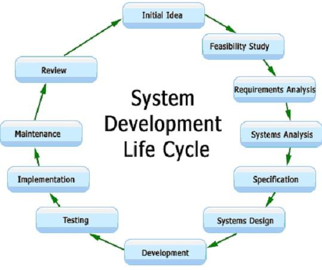
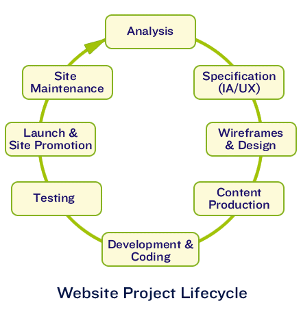

The strength of Vudens Technology Solution is to provide excellent Project Management and After Sales Support service. We undertake projects on a turnkey basis for the entire Business To maintain this service level, we have built our business around sophisticated quality management concepts, incorporating rigorous processes and robust project management controls that ultimately help secure the timely delivery of projects and highest quality results, within time and budget constraints.
we specialize in networking, Computer Maintenance & Repair, web site development and information systems, web hosting, and office automation. Our staff offers quality and reliable services you can count on, our friendly & professional staffs are here to answer any questions you may have about our Company or our services. At Vudens Technology Solution, the customer always comes first. Our Business can make your Business look good and prospering.
To provide and facilitate the delivery of quality, sustainable, customer oriented services efficiently and effectively. To consistently create value for our stakeholders, by providing solutions which enable our customers to achieve excellence and sustainable competitive edge with emerging technologies in IT fields.
Vudens Technology Solution deploys its five senses and more to deliver success beyond the ordinary, to its clients across East Africa and Africa.
A complete Document Management solution on Copy, Print, and Scan can be essential to your success in the new economy policies. Helping you to reduce time, overheads on consumables and proper accounting. Vudens Technology Solution provides Document Management solutions that deliver exceptional value across your organization - meeting your business requirements, managing costs, reducing risk, and fulfilling your scheduling parameters.
 |
We are advanced software powerhouse providing software development services for statement printing. Our solutions & services allow company to focus on their core businesses and yet be able to enlarge and augment their technical abilities.
|  |  |
At Vudens Technology Solution, we look at the Core Value of Integrity as the very soul of our company. This is reflected in our finances, the trusted relationship that we share with our customers and business partners, and the faith reposed in us by our stakeholders.